26/12/2025 — Nhịp nhanh QRS hẹp, với giản đồ bậc thang thú vị
Bản dịch tiếng Việt của bài "Narrow complex tachycardia, with interesting laddergram" – Dr. Smith’s ECG Blog. Giữ nguyên toàn bộ 11 hình ảnh của bản gốc.

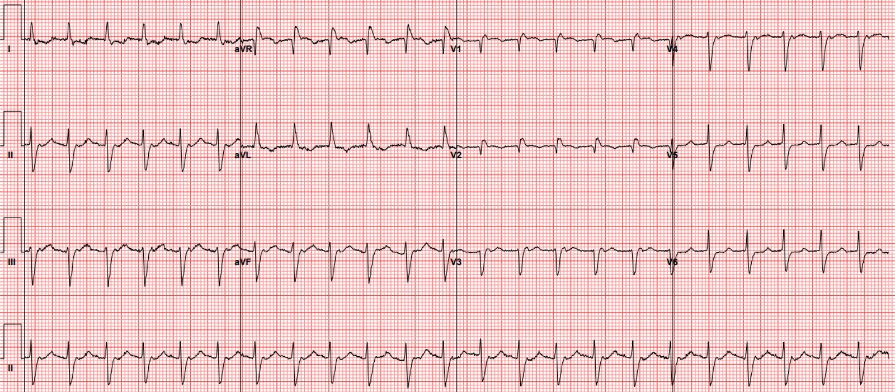
Một phụ nữ cuối độ tuổi 70 đến viện vì buồn nôn, nôn và tiêu chảy. Điện tâm đồ tại khoa cấp cứu của bà được trình bày dưới đây:
Điện tâm đồ 1

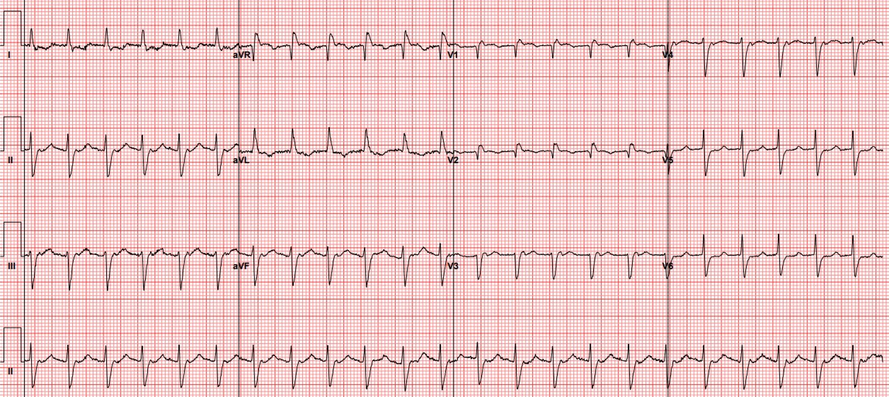
Bạn nghĩ gì?
Bản ghi này được đọc là cuồng nhĩ với blốc 2:1. Bệnh nhân được tiêm metoprolol 5 mg tĩnh mạch và chuyển về nhịp xoang.
Điện tâm đồ 2

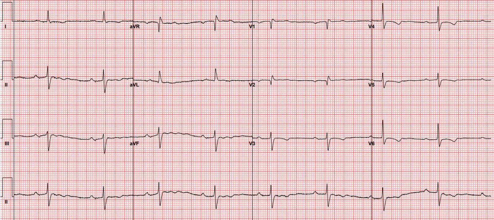
Chúng ta có còn tin vào chẩn đoán cuồng nhĩ không? Hãy nhớ rằng metoprolol không có khả năng chuyển nhịp rung nhĩ hay cuồng nhĩ. Thuốc giúp những bệnh nhân này bằng cách làm chậm dẫn truyền qua nút AV và ngăn tần số thất nhanh, nhưng không tác động gì lên rối loạn nhịp nền.
Có thể một người tự chuyển nhịp sau khi được dùng metoprolol, nhưng nhiều khả năng hơn là ngay từ đầu nhịp này đã không phải cuồng nhĩ. Các khả năng khác của nhịp nhanh QRS hẹp, đều là những “nghi phạm quen thuộc” — AVNRT, AVRT và nhịp nhanh nhĩ. Khi đang cân nhắc chẩn đoán SVT, việc so sánh các phức bộ QRS giữa nhịp xoang và SVT để tìm bất kỳ khác biệt hình dạng nào có thể đang che giấu hoạt động nhĩ là rất hữu ích.
Trong ca này, đặt V3 cạnh nhau để quan sát là rất hữu ích. Bạn có thấy khác biệt nào không?
Chuyển đạo V3 đặt cạnh nhau

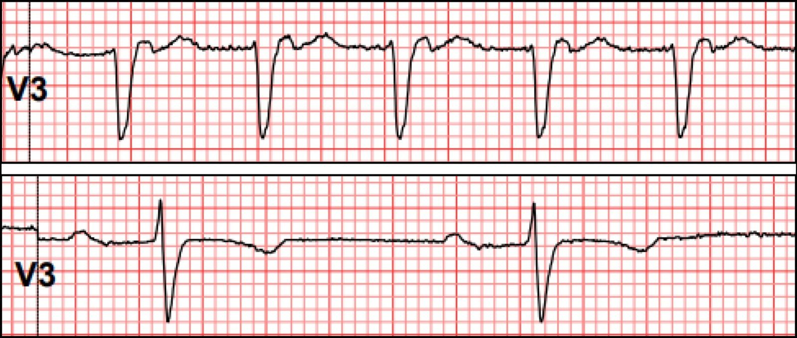
Một khác biệt bạn có thể nhận thấy là mất sóng R trong lúc nhịp nhanh. Điều này có thể do khác biệt về vị trí điện cực (ví dụ nếu điện cực được đặt cao hơn hoặc lệch vào trong hơn lúc nhịp nhanh so với lúc nhịp xoang). Khác biệt còn lại là sóng dương ở phần tận cùng QRS.
V3: sóng lệch dương ở phần tận cùng

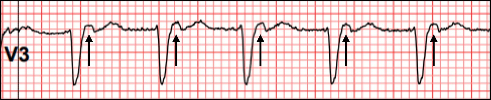
Khác biệt này không thể giải thích bằng vị trí chuyển đạo, và cách giải thích hợp lý hơn là nó phản ánh hoạt động nhĩ. Chúng ta có thể chứng minh đây không phải hoạt động 2:1 bằng cách “dò bước” bằng compa (calipers) để tìm thêm một sóng P nằm giữa các sóng P đã xác định ở trên.
V3 với compa “dò bước”

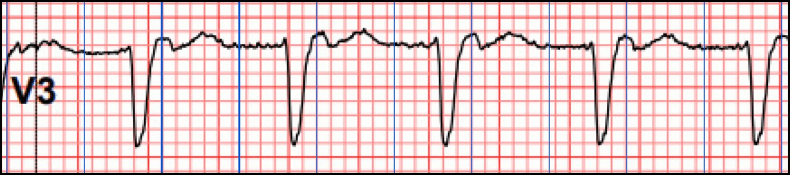
Dấu hiệu này được gọi là “giả R’” (pseudo R’). Điển hình là thấy rõ nhất ở V1, nhưng trong ca này chúng ta thấy nó ở V3. Dấu hiệu này gợi ý mạnh AVNRT điển hình.
AVNRT điển hình là gì? Đó là một rối loạn nhịp nhanh trên thất trong đó nút AV có một đường nhanh (thông thường) và một đường chậm. Phần lớn thời gian, ở những bệnh nhân có đường dẫn truyền kép trong nút AV kiểu này, các nhát xoang tới nút AV và đi vào CẢ HAI đường. Đường nhanh thắng cuộc đua qua nút, và khử cực tâm thất qua hệ His-Purkinje (HPS). Đường chậm tới muộn hơn một chút khi HPS đang trơ, và không gây ảnh hưởng gì trên điện tâm đồ.
Quay lại ca bệnh:
Bệnh nhân được bắt đầu dùng amiodarone và thuốc chống đông liều điều trị, rồi xuất viện với kế hoạch theo dõi ngoại trú. Vài ngày sau, bà quay lại vì chóng mặt. Điện tâm đồ cho thấy nhịp chậm bộ nối với tần số tim khoảng 30 nhịp/phút. Amiodarone được tạm ngưng và bà được nhập viện.
Khi xem lại dữ liệu theo dõi từ xa (telemetry), đường xu hướng tần số tim cho thấy một thay đổi đột ngột. Đường xu hướng tần số tim là một công cụ rất mạnh để tìm những đoạn telemetry đáng chú ý, nhất là khi có thay đổi tần số đột ngột.
Telemetry với thay đổi tần số đột ngột

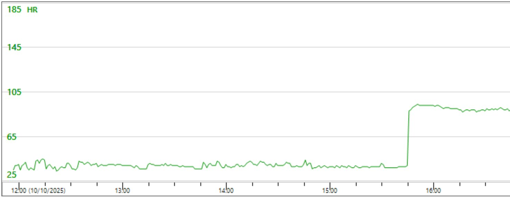
Nhịp tại thời điểm thay đổi này được trình bày dưới đây. Hãy xem và thử tự giải thích trước khi cuộn xuống tiếp.
Thay đổi nhịp

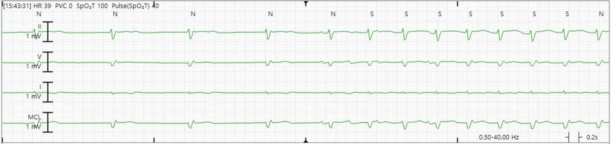
Đây là cách tôi diễn giải kèm giản đồ bậc thang (laddergram). Xin lưu ý rằng đây chỉ là một phỏng đoán có cơ sở. Còn có những cách diễn giải hợp lý khác.

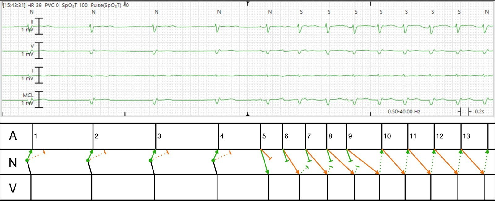
Giải thích bằng lời:
- Bốn nhát đầu là các nhát thoát bộ nối, dẫn truyền xuôi dòng xuống tâm thất và ngược dòng lên qua đường nhanh (xanh lá). Chúng cũng dẫn truyền lên qua đường chậm (cam), nhưng vì đường nhanh thắng cuộc đua nên tâm nhĩ đang trơ và không có bằng chứng dẫn truyền qua đường chậm trên điện tâm đồ bề mặt. Theo ngôn ngữ điện sinh lý, chúng ta gọi đây là “dẫn truyền ẩn”.
- Đột nhiên, tâm nhĩ phát ra vài nhát, các sóng P 5, 6, 7, 8 và 9. Có lẽ đây là một loạt nhịp nhanh nhĩ lạc chỗ (tức là vài PAC liên tiếp).
- P5 dẫn truyền nhanh xuống qua đường nhanh, tạo ra một nhát thất. Nó cũng dẫn truyền xuống qua đường chậm nhưng thua cuộc đua.
- P6 đến sớm, và vì vậy đường nhanh (xanh lá) đang trơ, nên nó dẫn truyền xuống tâm thất qua đường chậm (cam) với PR dài.
- P7-9 dẫn truyền tương tự, nhưng giảm dần ở mỗi nhát. Đây là hành vi sinh lý bình thường của nút AV. Xung động đến càng nhanh thì dẫn truyền càng chậm.
- Sau P9, chúng ta không thấy thêm sóng P DƯƠNG nào xuất phát từ tâm nhĩ. Thay vào đó, P9 dẫn truyền RẤT chậm xuống qua đường chậm (PR dài hơn cả RR!). Đến lúc nó cuối cùng tới đáy nút AV và dẫn truyền xuống tâm thất, đường nhanh đã hồi phục, và điều này khởi phát vòng vào lại.
Vì tần số chung dưới 100, bạn thậm chí không thể gọi đây là nhịp nhanh vào lại nút nhĩ thất. Thay vào đó, đây là rối loạn nhịp vào lại nút nhĩ thất.
Bệnh nhân này được làm thăm dò điện sinh lý (EP), và được chứng minh là dễ dàng gây được AVNRT tại phòng thăm dò, và đã được triệt đốt thành công.
Những điểm cần học:
- So sánh QRS lúc nhịp xoang và lúc SVT để tìm bất kỳ khác biệt tinh tế nào có thể phản ánh hoạt động nhĩ, đặc biệt là “giả R phẩy” (pseudo R prime).
- Đường xu hướng tần số tim trên telemetry rất hữu ích để tìm hiểu cơ chế rối loạn nhịp thông qua việc nghiên cứu lúc khởi phát và lúc kết thúc.
- Nhịp nhanh QRS hẹp kết thúc đột ngột với thuốc ức chế nút AV ủng hộ mạnh nhịp nhanh phụ thuộc nút, ví dụ AVNRT hoặc AVRT.
= = =
======================================
BÌNH LUẬN CỦA TÔI, bởi KEN GRAUER, MD (26/12/2025):
Những độc giả thường xuyên của các Bình luận của tôi trên Dr. Smith’s ECG Blog biết rằng tôi hay trích dẫn câu nói này của Rosenbaum — “Mọi rối loạn nhịp biết tự trọng đều có ít nhất 3 cách diễn giải khả dĩ.” Ca hôm nay chắc chắn hội đủ điều kiện vì thể hiện nhiều rối loạn nhịp “biết tự trọng” ( = đầy thử thách) — và tôi xin đưa ra một góc nhìn khác so với góc nhìn mà Dr. Frick đã trình bày ở trên trong phần bàn luận xuất sắc của anh..
= = =
SUY NGHĨ CỦA TÔI về Nhịp Ban đầu:
Để rõ ràng, trong Hình 1 — tôi đã đặt lại điện tâm đồ ban đầu — với bản ghi ghi lại ở bên dưới (ghi sau khi 5 mg Metoprolol tĩnh mạch đã chuyển thành công nhịp về xoang).
- Tôi đọc điện tâm đồ #1 là một nhịp SVT đều (nhịp nhanh trên thất) với tần số ~135/phút, nhưng không có dấu hiệu rõ ràng của sóng P xoang. Mô tả này cần gợi ra chẩn đoán phân biệt quen thuộc gồm: i) Nhịp nhanh xoang (rất khó xảy ra ở Hình 1, vì sóng lệch dương ở giữa khoảng R-R tại chuyển đạo II trông giống sóng T; rất bất thường khi có khoảng PR dài như vậy trong nhịp nhanh xoang ở tần số nhanh thế này); — ii) Cuồng nhĩ (AFlutter) (không phải — theo như Dr. Frick đã chứng minh ở trên rằng không chuyển đạo nào trong 12 chuyển đạo cho thấy bất kỳ dấu hiệu dẫn truyền AV 2:1 nào); — iii) ATach (nhịp nhanh nhĩ) — có thể xảy ra (mặc dù điều này đòi hỏi một khoảng PR rất dài); — hoặc iv) Một SVT vào lại (tức là hoặc AVNRT hoặc AVRT xuôi chiều — tùy theo vòng vào lại nằm gọn trong nút AV, hay vượt ra ngoài nút AV và bao gồm một đường phụ (Accessory Pathway)).
- Tôi nghi ngờ đáp án là iv) = một SVT vào lại — với MẤU CHỐT để phân biệt thêm giữa AVNRT và AVRT xuôi chiều nằm ở chỗ có hay không hoạt động nhĩ ngược dòng, và nếu có — thì bản chất của hoạt động nhĩ đó như thế nào.
- Điểm MẤU CHỐT: Nói chung — sóng P ngược dòng được nhận biết qua sự hiện diện của các sóng lệch âm ở một hoặc nhiều chuyển đạo dưới (II,III,aVF) xuất hiện sau phức bộ QRS. Với AVNRT (trong đó vòng vào lại nằm hoàn toàn trong nút AV) — khoảng RP’ ( = khoảng cách từ QRS đến sóng P ngược dòng) có xu hướng rất ngắn, đến mức chúng ta hoặc không thấy sóng lệch âm ngược dòng (vì chúng bị “ẩn” trong QRS) hoặc thấy sóng P ngược dòng xuất hiện ở ngay cuối QRS (thường làm biến dạng sóng S ở chuyển đạo II, III và/hoặc aVF).
- Ngược lại — với AVRT xuôi chiều (trong đó toàn bộ đường đi của vòng vào lại sẽ dài hơn vì vòng này vượt ra ngoài nút AV để bao gồm một phần của đường phụ (AP)) — thường có khoảng RP’ dài hơn, trong đó sóng lệch âm ngược dòng thường được thấy sau khi kết thúc QRS, nằm trong đoạn ST. Có những ngoại lệ! — nhưng những quy luật chung nêu trên về độ dài khoảng RP’ thường cung cấp một manh mối sâu sắc về việc liệu bệnh nhân có khả năng có một đường phụ “ẩn” tham gia vào nhánh ngược dòng của một nhịp SVT vào lại hay không.
Vậy làm sao chúng ta biết những sóng lệch nhỏ xíu thấy được trong lúc nhịp SVT nhanh có phải là sóng P ngược dòng hay không?
- Cách tốt nhất để phân biệt — là xem xét kỹ phức bộ QRS trên điện tâm đồ ghi lại thu được sau khi chuyển về nhịp xoang, để xem các sóng lệch mà chúng ta còn nghi vấn trong lúc SVT có không còn thấy nữa hay không. Đây là lúc các dải nhịp chuyển đạo II dài ở cuối mỗi bản ghi trong Hình 1 trở nên rất hữu ích — vì chúng cung cấp cho chúng ta nhiều nhát liên tiếp cho thấy điều gì đang diễn ra ở chuyển đạo II.
- Như được gợi ý trong ô phóng to ở chuyển đạo II của điện tâm đồ #1 — tôi cho rằng có một sóng P ngược dòng hai pha (mũi tên ĐỎ đánh dấu một sóng lệch dương nhọn nhỏ ở đầu ngay sau QRS — tiếp theo là mũi tên XANH LAM đánh dấu một sóng lệch âm rộng hơn thấy được ngay trước sóng T). Xin nhấn mạnh: Tôi hoàn không chắc chắn về những gì mình đang thấy — vì sóng P ngược dòng hai pha rất hiếm gặp, và nhiễu đường nền làm phức tạp đánh giá của tôi.
- Dù vậy — tôi nghĩ rằng nếu sóng lệch dương mũi tên ĐỎ sau QRS không phải là một phần của sóng P ngược dòng — thì khoảng RP’ của sóng lệch âm mũi tên XANH LAM vẫn sẽ dài hơn so với điều tôi kỳ vọng ở AVNRT (trong đó vòng vào lại nằm hoàn toàn trong nút AV).
- Cũng Xin Nhấn mạnh! — Không điều gì tôi mô tả ở trên ảnh hưởng đến xử trí ban đầu bệnh nhân này, vì bất kể nhịp ở điện tâm đồ #1 hóa ra là AVNRT hay AVRT xuôi chiều — điều trị bằng nghiệm pháp cường phế vị, adenosine, verapamil/diltiazem, và/hoặc thuốc chẹn ß đều sẽ phù hợp và hiệu quả như nhau. Nhưng tôi nghĩ việc tiến càng gần càng tốt tới một chẩn đoán nhịp xác định là có giá trị, vì có thể hỗ trợ các quyết định xử trí lâu dài.
- Tóm lại: Chúng ta biết rằng sóng P ngược dòng hai pha rất hiếm gặp, nhưng khi xuất hiện, chúng thường liên quan nhất đến sự tham gia của một đường phụ ẩn vào vòng vào lại (Ching-Tai Tai và cs. — JACC 29(2): 394-402, 1997 ). Và ngay cả khi sóng P ngược dòng ở điện tâm đồ #1 chỉ là sóng lệch âm đơn độc mũi tên XANH LAM trong Hình 1 — thì khoảng RP’ vẫn dài hơn mức thường gặp ở AVNRT — đó là lý do tôi nghi ngờ AVRT xuôi chiều ở một bệnh nhân có đường phụ ẩn (AP) là căn nguyên của nhịp SVT trên điện tâm đồ #1.
- T.B. (P.S.): Nhịp trên điện tâm đồ #2 giờ là nhịp xoang — nhưng tần số của nhịp xoang này sau điều trị bằng Metoprolol tĩnh mạch là chậm ( = nhịp chậm xoang ở ~55/phút). Do không thấy thêm bản ghi 12 chuyển đạo nào sau chuyển nhịp ở bệnh nhân cuối độ tuổi 70 này — nếu mức độ nhịp chậm này còn kéo dài đến lúc bà xuất viện, người ta sẽ phải tự hỏi liệu bệnh nhân có mắc thể “nhịp nhanh–nhịp chậm” (Tachy-Brady) của SSS (hội chứng suy nút xoang) hay không — với thành phần “nhanh” ( = nhịp SVT vào lại) bị làm nặng thêm bởi thuốc làm chậm tần số ( = thuốc chẹn ß tĩnh mạch).
= = =
Hình 1: So sánh giữa điện tâm đồ ban đầu — và điện tâm đồ ghi lại sau khi chuyển về nhịp xoang.

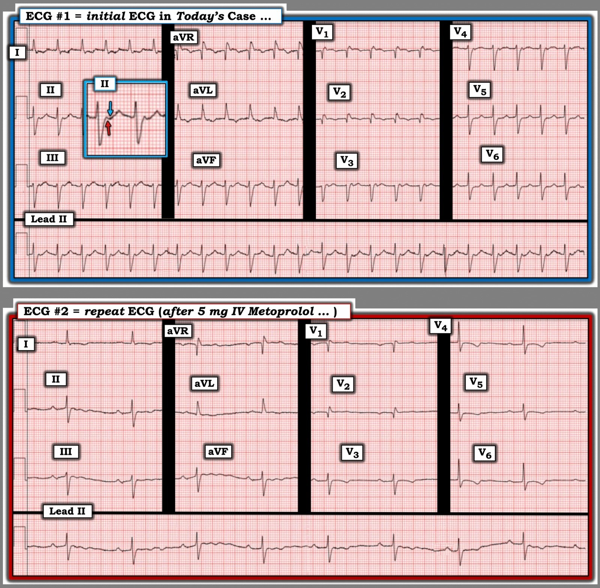
= = =
Chuyện gì Xảy ra Tiếp theo?
Theo phần bàn luận ở trên của Dr. Frick — người phụ nữ hơn 70 tuổi này được xuất viện với Amiodarone, kèm kế hoạch theo dõi ngoại trú. Vài ngày sau, bà quay lại bệnh viện vì chóng mặt và nhịp chậm rõ rệt — với phân tích xu hướng và bản ghi telemetry trình bày ở Hình 2 mà tôi đã đặt lại từ phần trình bày của Dr. Frick:
- Theo Dr. Frick — theo dõi telemetry cho thấy nhịp chậm kéo dài khoảng 40 nhịp/phút trong nhiều giờ — cho đến khi có một “đỉnh vọt” đột ngột của tần số tim lên tới ~90/phút, với dải nhịp hấp dẫn được ghi đúng lúc thay đổi đột ngột về tần số và nhịp này ( = dải nhịp nhiều chuyển đạo trình bày bên dưới phân tích xu hướng ở Hình 2).
- Điểm MẤU CHỐT: Mức độ nghi ngờ SSS của chúng ta rõ ràng tăng lên khi xem phân tích xu hướng và dải nhịp ở Hình 2. Dù vậy — SSS (và nhu cầu tạo nhịp vĩnh viễn) chỉ có thể được chẩn đoán sau khi đã loại trừ các nguyên nhân “sửa được” của tình trạng nhịp nhanh–nhịp chậm luân phiên (tức là ngưng Amiodarone mà bệnh nhân này đã được cho dùng — cũng như loại trừ thiếu máu cục bộ-nhồi máu gần đây hoặc đang diễn ra, suy giáp, ngưng thở khi ngủ).
- Để biết thêm về SSS — xem Bình luận của tôi trong bài đăng ngày 22 tháng Một năm 2020 trên Dr. Smith’s ECG Blog.
= = =
Hình 2: Phân tích xu hướng và bản ghi telemetry sau khi bệnh nhân hôm nay tái nhập viện.

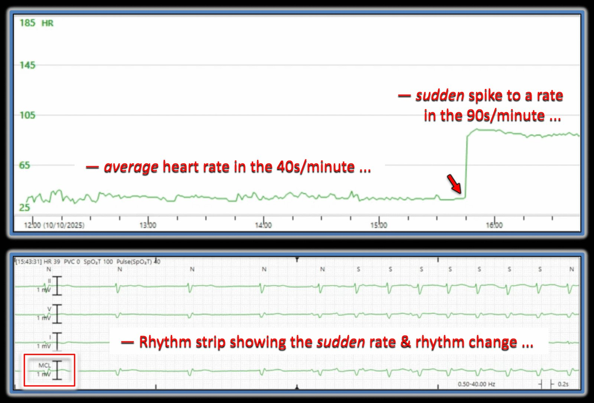
= = =
Một Khả năng Giản đồ bậc thang Khác …
Tôi xin kết thúc phần bình luận bằng một góc nhìn khác về dải nhịp ở phía dưới Hình 2 — mà Dr. Frick đã đưa ra minh họa bằng giản đồ bậc thang của anh trong phần bàn luận ở trên.
- Như câu trích dẫn của Rosenbaum mà tôi dùng để mở đầu bình luận — với các rối loạn nhịp phức tạp, có thể có nhiều hơn một cách giải thích bằng giản đồ bậc thang, và việc xác nhận cuối cùng thường chỉ có thể thực hiện bằng thăm dò điện sinh lý.
- Tôi có thể sai — và giản đồ bậc thang của Dr. Frick có thể dự đoán chính xác hơn cơ chế của rối loạn nhịp phức tạp này. Nhưng tôi nghĩ sẽ thú vị khi bàn về một khả năng khác qua giản đồ bậc thang đề xuất của tôi trình bày ở Hình 3.
- LƯU Ý: Tôi đã đưa ra giả thuyết giản đồ bậc thang trình bày ở Hình 3 trước khi biết kết quả thăm dò điện sinh lý xác nhận AVNRT là cơ chế các cơn nhịp nhanh của bệnh nhân này.
Nhịp trong giản đồ bậc thang ở Hình 3 của tôi bắt đầu bằng nhịp chậm mà chúng ta đã thấy trong phân tích xu hướng ở Hình 2. Tôi nghĩ nhãn “MCL” là một chuyển đạo theo dõi bên phải, chẳng hạn MCL-1. Tôi đã đánh số các nhát — và ghi nhãn các sóng P bằng chữ cái thường trong giản đồ bậc thang này.
- Các nhát #1 đến 4 cho thấy một nhịp thoát bộ nối (tức là một nhịp đều, QRS hẹp không có sóng P xoang — với tần số ở mức hơn 40 một chút).
- Các sóng lệch dương ở phần tận cùng (giả r’ ) trong 4 phức bộ QRS đầu gần như chắc chắn là sóng P ngược dòng (ghi nhãn a,b,c,d) — vì sóng P ngược dòng ở chuyển đạo V1 thường dương, và những sóng lệch dương tận cùng này mà chúng ta thấy ở các nhát #1 đến 4 không có ở các nhát được dẫn truyền #5 và 8.
- Các đường XANH LAM nhạt từ 4 nhát đầu này biểu diễn theo sơ đồ sự lan truyền xung động qua đường phụ (AP) (mà tôi đã nghi ngờ có hiện diện khi bàn luận về Hình 1) — với dẫn truyền ngược dòng này xuất phát từ ổ thoát bộ nối ở Tầng Nút AV.
- Tiếp theo là một loạt 5 nhát ATach (các sóng P ghi nhãn e,f,g,h,i ). Như thường gặp với các loạt ATach — có dẫn truyền Wenckebach với khoảng PR dài dần cho tới khi sóng P “h” không được dẫn truyền. Chu kỳ bắt đầu lại với nhát #8 được sóng P “i” dẫn truyền với khoảng PR bình thường. Điều này dường như tạo điều kiện khởi phát nhịp nút vào lại ở tần số ~90/phút trong suốt phần còn lại của bản ghi (mà theo Dr. Frick — về mặt kỹ thuật là “quá chậm” để được xếp là AVRT — do không có “Nhịp nhanh”).
- Các đường XANH LAM nhạt (bắt đầu từ nhát #8) — một lần nữa biểu diễn theo sơ đồ sự tham gia tích cực của đường phụ ẩn vào vòng vào lại.
ĐIỀU CỐT LÕI: Bất kể giản đồ bậc thang của tôi hay của Dr. Frick là “đúng” — bệnh nhân hôm nay biểu hiện các nhịp chậm-nhanh luân phiên gợi ý SSS (chờ xem diễn biến sau khi ngưng Amiodarone).
= = =
Hình 3: Giản đồ bậc thang tôi đề xuất cho dải nhịp trình bày ở Hình 2.

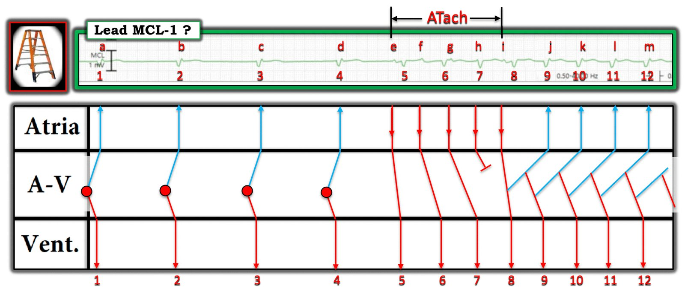
= = =
= = =